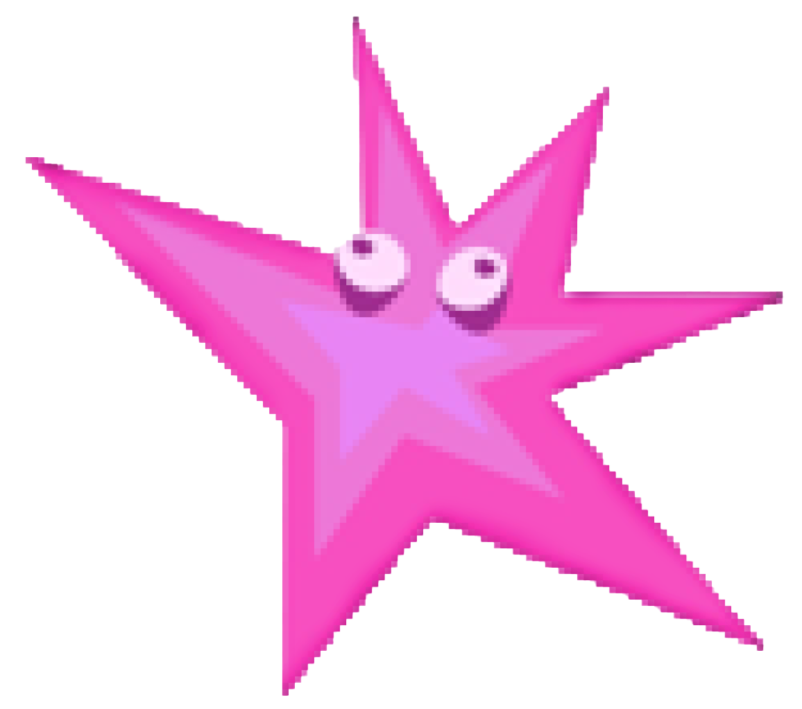

Welcome to StairWELL

Hi, I’m XX,
Somebody asked me how I was doing today and I said good. And then they asked, “How are you really?” And then I thought, hmm.. How am I really? So I thought I’d check in with myself. This is how I did it…
I thought about the past few weeks and answered a few questions. As I answered each question, I was able to animate XX name Then, I launched how I was feeling onto the StairWELL and watched my mood light up the sculpture, move, make sound, and interact with the moods of others.
Along the way I thought about why I was feeling the way I was. Where had I been coming from? Where was I headed to? Who had I been spending time with… A couple weeks ago I may have been feeling some kind of way but today I might feel another.
So Draw a squiggle that captures how you’re feeling Feel free to try a few different times and then hit next.
All UI, style, and questions are in prototyping and do not reflect the final product